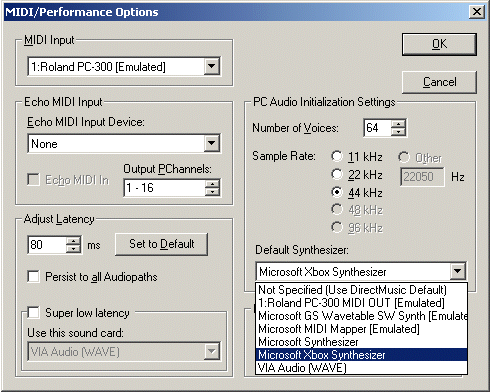
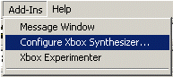
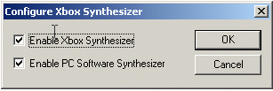
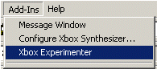
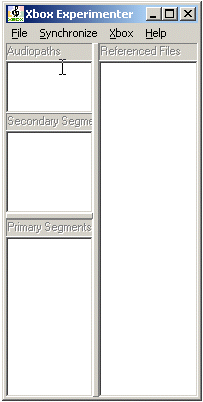
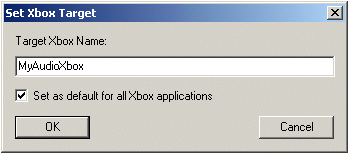
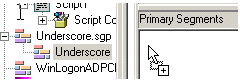
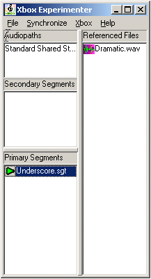
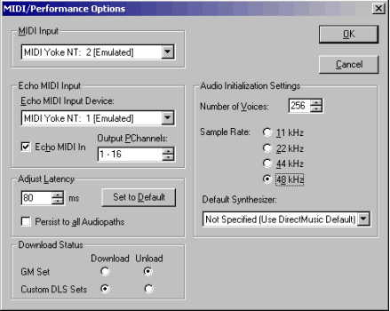

By Scott Selfon, Audio Content Consultant, Content and Design Team, Xbox Advanced Technology Group
Note Both the Microsoft® DirectMusic® library and its authoring tool, Microsoft® DirectMusic® Producer for Xbox®, are "locked down" and in maintenance mode. We are not adding any features and will usually try to find workarounds for known issues rather than risk destabilizing the library. We are using our experience with DirectMusic to build the Xbox Audio Creation Tool (XACT), which is an easy to use and extremely efficient content-driven engine that will eventually be able to do most of the commonly used capabilities of DirectMusic. While DirectMusic provides unique features in the area of MIDI and DLS collection playback, including understanding of chord progressions, intensity level-based playback, content-driven variability, and scripting, its support for wave-based playback is not optimized for the Xbox. The library's origins as a PC engine often lead to difficult Xbox implementations, with somewhat indeterminate memory, disk I/O, and CPU usage. While some titles have successfully used the library, we recommend that those without successful previous experience implementing audio using DirectMusic instead consider using XACT. Though XACT will not in the near term provide support for sequenced music or awareness of advanced music concepts, it provides a much stronger solution for streaming music and ambience, as well as memory and CPU optimization for the Xbox platform. XACT has no current plans for more advanced music-based features like chords, intensity levels, or styles, though its eventual support of scripting would allow you to implement some of these yourself if you wish.
This chapter gives an overview of Microsoft DirectMusic Producer for Xbox, a content authoring, auditioning, and management tool for audio on the Xbox video game system. A few brief items to keep in mind before we get started:
For more specific information on various topics discussed here, please see the white papers and FAQs referenced in the footnotes.
To start, we should note that you are not required to use DirectMusic Producer for strictly linear content, such as wave and Microsoft® Windows Media® Audio (WMA) files. Furthermore, DirectMusic Producer is intended to work with, not replace, other tools in the sound designer/composer's palette that are specialized for MIDI sequencing, wave editing, render-time effects, and so on. DirectMusic Producer understands MIDI and wave clipboard formats for transferring data to and from other applications, and has straightforward methods for importing files of these formats.1
DirectMusic Producer also provides the framework for authoring content specific to Xbox, particularly DirectMusic and DirectX Audio scripting formats. Specifically, these modules of DirectMusic Producer provide the primary creation and editing environment for various types of content, including (but not limited to):
The Xbox Development Kit (XDK) includes DirectMusic Producer for Xbox, which contains tools that allow a content creator to audition their content on Xbox hardware. These features are supported only on machines running Microsoft® Windows® 2000 or XP.4 The Windows 2000/XP machine should be connected to an Xbox Development Kit or Xbox debug kit via a network connection or via an Xbox System Link Cable. The Xbox runs the Audio Console App, detailed below.
XDK recovery disks come with an executable called Audio Console App. When launched, it displays a message explaining its function. As we'll see below, this text disappears and is replaced with pertinent information depending on which kind of connection is made from DirectMusic Producer for Xbox.
Using the Xbox Synthesizer allows your Windows 2000/XP machine to communicate with the Xbox as if it were a MIDI device supporting DLS-2 wavetable instruments. Generally this will be the method used for playing back linear content from MIDI sequencers5 (including DirectMusic Producer) or for quick auditioning of DLS content as you create it within DirectMusic Producer. As discussed below, its functionality is limited to DLS playback.
The Xbox Synthesizer can be selected from the MIDI/Performance Options menu (click the MIDI port-shaped icon in the Transport Options toolbar).

Illustration Setting the Xbox Synthesizer to be the default synthesizer.
The other options within the PC Audio Initialization Settings menu apply solely to your Windows 2000 machine; you cannot change the sampling rate of the Xbox audio hardware, which is fixed to 48 kHz, and the number of voices is related solely to the PC synthesizer.
Note that if you are using DirectMusic content, the DirectMusic libraries and performance are still running on your Windows machine; only note and DLS data is actually transmitted to the Xbox Development Kit. This means in particular that only MIDI and DLS information can be heard on the XDK using the Xbox Synthesizer—if you play waves within wave tracks in segments, they will play silently. To hear waves played back within segments, choose the Xbox Experimenter. You also cannot use this method to audition DirectX Audio scripts on the Xbox hardware; the scripts themselves will be running only on the PC.
If you were previously authoring on a Windows 2000/XP PC without an Xbox Development Kit or debug kit, we provide an option that will allow you to compare the characteristics of your sounds on the PC versus the Xbox. You can choose to listen to a software synthesizer on the PC equivalent to the Microsoft Software Synthesizer, or listen to the hardware synthesizer on the Xbox, or both simultaneously. Note that in no way is the software synthesizer intended as an emulation of the Xbox Synthesizer, it is just provided as a reference for quickly comparing how your content sounded when authored on the PC versus how it is played by the Xbox.6
Click Configure Xbox Synthesizer on the Add-Ins menu,


and then select Enable Xbox Synthesizer to hear content played via the Xbox hardware synthesizer, and/or Enable PC Software Synthesizer to hear data from your PC.
You'll notice that when the Xbox Synthesizer is enabled, the Audio Console Application will show some additional information, and as audio is played, the meters will display the output levels. The connection is removed when the Xbox Synthesizer is no longer the default synthesizer.
The Xbox Experimenter module provides a more complete solution for auditioning DirectMusic content directly on the Xbox audio hardware. The Xbox Experimenter window is opened from the Add-Ins menu.


Illustration The initial (unconnected) state of the Xbox Experimenter window.
The first thing you'll probably want to do is make sure you're going to be connecting to the correct Xbox Development Kit or debug kit. Notice the name assigned to your XDK (presented in the lower center of the XDK Launcher and changeable through the Settings menu). Now moving back to the PC, from the Xbox menu of Xbox Experimenter, click Set Xbox Name. In the dialog that appears, type the name of the target machine.

From here, you can connect your Windows 2000/XP machine to the Xbox by clicking Connect on the Xbox menu. You'll notice at this point that your XDK says "Xbox Experimenter connected." You can start dragging open segments from your project tree into the Primary Segments or Secondary Segments windows. Once dragged, the segment and all files that it references are automatically runtime saved and copied to the title space of the Xbox hard disk, xt:\temp. You can change the default directory if you wish by clicking Set Target Directory on the Xbox menu in the Xbox Experimenter window.

Illustration Dragging a segment from the project tree into the Primary Segments area of Xbox Experimenter...

Illustration ...copies a runtime saved version of the segment to the Xbox, along with any files it references (in this case, a wave file).
Any files that are in the Runtime Embed folder of a segment are embedded as they would be in a regular runtime save, so they will not appear in the Referenced Files area. You can now play the segment by clicking on the small green play button to the left of the segment.
You can also create standard audiopaths to play content on by right-clicking within the Audiopaths window. Of the most interest for now will probably be a Standard Shared Stereo and Reverb, so you can hear what the default reverb settings sound like. Your developer can change these settings for you at run time, though for the time being, parameters are not exposed within DirectMusic Producer.
Right-clicking on the green play button for a segment will allow you to specify which audiopath to play on (for instance, playing ambience through a dry path while the music plays through a reverb path) as well as set the playback boundary for secondary segments (next measure, next marker, and so on).
Remember that while you are editing a segment (or any of the content that it references) within DirectMusic Producer, playback is performed on the PC itself (unless you've set the default synthesizer to be the Xbox Synthesizer). You should always choose All Files on the Xbox Experimenter Synchronize menu option after editing to ensure the updated content is copied to the Xbox.
Note that all of these Xbox Experimenter features are provided for audition purposes only; settings are not currently saved with segments for the audiopath to play them on. Similarly, content placed on the Xbox hard disk is by no means permanent; it is placed in the title section, so it is removed when the Xbox is turned off.
Just to emphasize the differences between the Xbox Experimenter and the Xbox Synthesizer, any segments dragged into Xbox Experimenter are physically copied to the Xbox. Hitting play transmits a message to the Xbox, which in turn runs its own DirectMusic performance and plays segments. So Xbox Experimenter has full support for DirectMusic content, such as waves in wave tracks, variations, scripts, and so on.
By comparison, the Xbox Synthesizer provides a limited way to play content onto the Xbox hardware from other DirectMusic modules (without having to drag items into Xbox Experimenter). From Segment Designer windows, DLS instruments can be triggered on the Xbox (though the DirectMusic performance is still running on the Windows 2000 machine). From DLS Designer and Wave Editor windows, waves and articulations can be edited and instantly auditioned on Xbox. But again, waves placed in wave tracks will not be heard in this mode
Of course, the composer can choose to use either or both options as the content authoring situation dictates. Generally, wave-based content and DirectMusic-centric content will be best suited to Xbox Experimenter. If you are building up DLS collections and altering their articulation information, or making use of an external synthesizer to trigger DLS instruments, you will probably want to use the Xbox Synthesizer.
Several other features differentiate DirectMusic Producer for Xbox from previous versions of DirectMusic Producer:
As discussed above, no new features are currently planned for DirectMusic Producer for Xbox or the DirectMusic library.
DirectMusic Producer for Xbox diverges somewhat from DirectMusic Producer 8.0 for the Windows platform. While many aspects of authoring continue to be shared by both platforms, and file formats are generally compatible, DirectMusic Producer for Xbox provides functionality specific to the Xbox, while hiding or disabling features that do not apply to Xbox. If you wish to author content using DirectMusic Producer 8.0, be aware of the differences between authoring for Xbox and for Windows, and avoid features and content that do not apply to Xbox.7 Several highlights:
For authoring content using previous versions of DirectMusic Producer, the following steps should ensure that your Windows 2000 development machine8 is running as closely as it can to the Xbox audio hardware. Keep in mind that CPU and memory overhead on a Windows PC will not accurately reflect the performance of the Xbox Media Communications Processor.

Several settings are not defaults on DirectMusic Producer installation:
You should now be ready to start authoring DirectMusic content for Xbox. A number of the papers on this Web site can help you get started with DirectMusic Producer.
Getting Started with DirectMusic Producer: MIDI and DLS Collections—an introduction to DirectMusic Producer that provides step-by-step information for importing MIDI files and building DLS collections.
DirectMusic Producer Components—an overview of the various file types and segment track types that can be used to author DirectMusic content.
DirectMusic Producer 7.0 Tutorial—a step-by-step tutorial to help you get started with DirectMusic Producer. (This is based on DirectX 7, so it does not discuss wave tracks. However, it's a good introduction for MIDI+DLS content creation.)
DirectMusic FAQ—questions commonly asked about DirectMusic.
Once you've authored some content and runtime saved it,9 ask your developer to try it out on the Xbox. If you're running into problems playing content that sounded fine on the PC, check for the following common issues:
1 For an introduction to MIDI import and DLS collection authoring using DirectMusic Producer, see the white paper Getting Started with DirectMusic Producer: MIDI and DLS Collections.
2 For an introduction to DirectX Audio scripting, see the white paper Bridging the Content-Coding Gap: An Introduction to DirectX Audio Scripting.
3 Note that effects support within audiopath configuration files is not supported in Xbox System Software v1.0. Effects can still be instantiated by the developer (authored using the DSPBuilder or xgpimage tools), and audiopath outputs routed to these effects.
4 If you need Windows 95 or Windows 98 for other software that you run, DirectMusic Producer 8.0 does run on these operating systems, but Windows 2000 is strongly recommended for Xbox content development. Xbox-specific functionality (such as Xbox Experimenter and the Xbox Synthesizer) as well as WDM sound card drivers (required for low latency MIDI recording) are not supported on Windows 9x. You might consider making your machine dual boot; for an overview of this, see Dual Booting a PC (Windows 9x and Windows 2000).
5 Other sequencers can use the Xbox hardware (within the confines of MIDI triggered sounds) using the process detailed in Using DirectMusic Producer to Trigger DLS Instruments from Non-DLS-Enabled Sequencers.
6 The software synthesizer is roughly equivalent to the DirectX 7 Microsoft Software Synthesizer with the addition of DLS-2 capability. As with the Microsoft Software Synthesizer provided with DirectX 8, it uses linear interpolation, which will often add aliasing to waves that are not at the performance's sample rate. You should notice no such artifacts with the Xbox hardware synthesizer, which uses multipoint polynomial interpolation.
7 These differences are outlined in Chapter 2—Xbox Audio Content, from the Audio Best Practices document.
8 See footnote 4.
9 For details about runtime saving, file embedding, and other content integration issues, see Delivering the Goods: File Management Tricks and Tips.